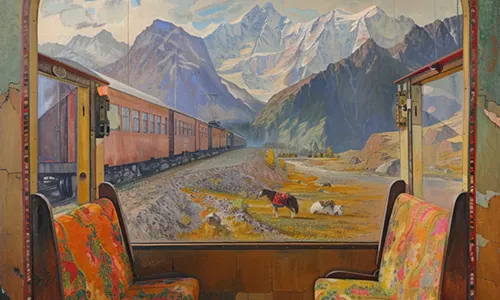

Quelques Toiles Adaptation Cette auto-portrait montre Frangipani dans un accoutrement inhabituel Typique des contrées reculées du Tibet qu'il a visité  Compartiment privé Représente le vide créé par la perte d'un être cher Peinte lors d'un de ses nombreux voyages Taj Mahal Hôtel Frangipani apprécia grandement cette visite Il séjourna brièvement mais laissa une toile de qualité